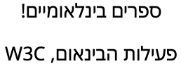
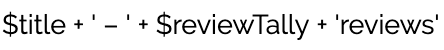

定义
语言元数据通常指示整个资源（resource）的预期语言受众，并且可以想象的是，对于多语言的资源，语言元数据也可能是一个语言列表。语言元数据属性可能包含多个值，因为它旨在描述信息的所有潜在用户。
文本处理语言指的是特定范围文本的语言（可以是整个资源，也可以只是其中的一部分）。表示文本处理语言的属性只能有一个值，因为它让拼写检查器、字体选择器、断行算法、大小写转换器、语音浏览器和其他对语言敏感的应用程序了解应该将哪组规则或资源应用于特定范围的文本。这类应用程序通常需要明确指出正在使用的语言才能正常工作。
基方向（base direction）确定显示双向文本时内容的总体书写方向。Unicode双向文本算法（UBA）主要侧重于根据字符属性（character property）排列相邻字符，而基方向在更高层次上起作用，并规定：（1）显示强类型LTR和RTL字符排列的视觉顺序和方向；（2）在存在弱类型字符（如标点符号）的地方，如何放置它们。
语言协商指的是基于内容的语言来选择或过滤的一切过程。通常这意味着当内容可能存在多种语言或区域设置时找到最佳匹配值来选择单一语言的内容（或回退到一个可用的默认语言）。一些常见的语言协商算法包括BCP47中的Lookup算法或ECMA-402中的BestFitMatcher。
识别内容的语言
获得文本处理语言
在确定了要呈现给北山先生的相关注释文本后，他使用的应用程序必须显示这些文本，这样北山先生才可以阅读这些文本。而在渲染文本时，应用正确的字体非常重要。在fig_ja_zh_fonts中，第一行和第二行分别被标记为 ja（日语）和zh-Hant（繁体中文）。两行中的字符码位相同，但日文和中文的读者希望看到的字形是有不同的。将正确的字符形式与正确的语言联系起来很重要，否则您可能会让读者感到不舒服或不开心。

以日文（上方）和繁体中文（下方）字体显示的相同码位。（查看码位）
因此，将日文字体应用于北山先生正在阅读的日文文本很重要。文本在行尾换行的方式在不同语言里也有所不同。由于这些原因，我们需要确定应用在选择文本字体或换行算法时的所选择的语言。
另一个可能需要考虑的因素是文本到语音的转换。语音浏览器需要知道注释中包含的汉字是使用日语还是中文发音，并选用合适的语音和字典。
很多其他文本渲染或分析工具需要知道它们正在处理的文本的语言，许多不同种类的文本处理都需要内容语言的信息才能进行正确的处理，而这不仅仅是简单的呈现文本。例如，如果北山先生想要搜索注释，应用可能会提供全文搜索功能。为了索引注释中的单词，应用需要根据单词边界分割文本。在日语和汉语中，单词之间不使用空格，所以一般需要使用特定于语言的词典和启发式算法来分词。
我们还需要一种把注释中的一部分评论语言更改为中文或藏文的方法，以便在那里可以应用适当的字体和换行算法。
通过查看我们前面提到的资源级语言标签，可以假设资源中字符串的文本处理语言，因为这个语言标签指示着目标受众，但前提是它是单一语言标签。如果标签包含“ja,zh,bo”，则不清楚文本的哪些部分应该被视为日语，哪些是中文，哪些是藏语。因此，我们需要额外的元数据来指示文本各部分的文本处理语言分别是什么，理想情况下，我们应该使用整个资源范围的语言标签声明作为默认值，并且能够更改内容的部分的语言。
内联语言更改
句子（或上面的出版物清单示例中的字符串）里可能会发生语言的变化，而如果我们要应用正确的字体和样式，声明这些变化也很重要，所以必须要有某种方式来指示新的文本处理语言段的开始和结束的位置。
本地化的更多需求
看过他感兴趣的评论后，北山先生意识到他需要另一本参考书，但他不知道目录号。他使用一个应用来搜索目录条目，这个应用是用JavaScript编写的，可以根据用户偏好在多种语言之间切换。实现这项功能的一种方法是在每次用户选择一种新语言时从服务器重新加载应用的UI。然而，由于这个应用体积相对较小，开发者选择使用JavaScript打包所有翻译（有几个开源项目允许运行时选择语言环境）。同样，目录搜索服务会发回所有可用语言的记录，而不是根据用户当前的语言偏好预先选择。
电子书目录示例中展示了一个单一语言的数据记录。但是某些应用（例如目录搜索工具及其支持服务）可能需要能够为同一字段发送多种语言的能力（例如在本地化应用或数据有多种语言时）。在应用有自己的语言协商机制，或在消费者不知道哪种或哪几种语言会被选择时尤其如此。
因此，支持这一点的序列化协议需要能够表示同一字段的几种不同语言形式。例如，在上面的电子书示例中，title或description的值可能都有非英语版的翻译。还有一种可能是，应用可以消费者可以在运行时选择的已被本地化的字符串。在某些情况下，应用可能会向用户显示所有语言版本。在其他情况下，作为语言协商的一部分，不同的语言值可能会与用户偏好相匹配，以选择最合适的语言来显示。
当可以使用多种语言表示时，序列化可能会提供一种方法（这种方法会在这种格式的规范中定义），用于为整个文档设置语言或书写方向的默认值。这样，序列化后的文档在与默认值匹配的情况下，就可以省略各字段中的语言和书写方向元数据。
确定内容的基方向
为了使应用正确显示双向文本，例如在以下用例中，消费者必须有一种方法来确定每个字符串的基方向。仅仅依靠Unicode双向文本算法来解决这些问题是不够的，我们还需要一种方法来建立显示字符串的整体书写方向上下文（这也是“基方向”的含义）。
如果您不熟悉RTL文本和Unicode双向文本算法，您可能会觉得这个简单的介绍文章有用。
这些用例说明了不关联基方向可能会产生的问题。大多数例子都与让事物出现在正确的位置有关。
标点符号和基本书写方向布局
上面的电子书目录示例显示了一个希伯来语书籍条目。以下是分别是出版商和作者姓名字符串的正确显示方式。

上方是出版商的名称（国际图书！），下方是作者（W3C国际化活动）。（查看码位）
我们把这些字符串被插入到描述这本书的页面中。该页面有英语（LTR）和希伯来语（RTL）版本。
将这些字符串放入RTL的希伯来语上下文中，如下图所示，它们看起来没问题。
 放入RTL页面的作者和出版商名称。（查看码位）
放入RTL页面的作者和出版商名称。（查看码位）
但是，将其放到英文LTR页面中，感叹号和单词“W3C”会出现在错误的位置。它们是被插入字符串的一部分，应显示在左侧。
插入到LTR页面中的作者和出版商名称没有书写方向信息。（查看码位）
通过应用Unicode双向文本算法 (UBA)，希伯来语字符会自动从右至左排列。但是，UBA不能使感叹号或拉丁文本出现在它所属的位置，除非围绕插入的字符串的基方向被设置为RTL。
在使用HTML时，要在LTR上下文中实现这一点，我们需要将字符串插入到具有值rtl的dir属性的元素中，这样就会产生预期的结果：
 插入LTR页面时应显示的作者和出版商名称。（查看码位）
插入LTR页面时应显示的作者和出版商名称。（查看码位）
或者您也可以将字符串插入到dir设置为auto的元素中，或者插入到bdi元素中。在任何一种情况下，浏览器都会通过查找字符串中第一个强方向字符的方向来自动将RTL方向应用于这个字符串。
管理多个不同方向的文本段
当书写方向相反的文本既不在开头也不在结尾，而是在字符串的中间时，结果可能会更加混乱。
此处正确显示了这本希伯来语书的标题，标题字符串中包含三个不同方向的文本段。
 电子书目录中希伯来语书的名称。（查看码位）
电子书目录中希伯来语书的名称。（查看码位）
如果将字符串放入英文（LTR）文档中，它将正确显示。
将没有书写方向信息的书名字符串插入英语页面。（查看码位）
把这段文字放入希伯来语（RTL）页面，如果没有规定字符串的基方向，文字的行进顺序将发生变化，并开始变得不可读或具有误导性。
 将没有书写方向信息的书名字符串插入希伯来语页面。（查看码位）
将没有书写方向信息的书名字符串插入希伯来语页面。（查看码位）
如果将双向文本字符串插入LTR上下文而未指定插入字符串的基方向为RTL，则可能会产生无法理解的文本。这就是一个例子。
字符串中不同方向的文本段越多，文本就越难理解。
 将一个具有四个不同方向文本段的字符串插入到LTR上下文中，上方是正确的显示方式，下方是没有指定基方向的情况。（查看码位）
将一个具有四个不同方向文本段的字符串插入到LTR上下文中，上方是正确的显示方式，下方是没有指定基方向的情况。（查看码位）
当文本和标点符号或标记语言结合使用时，情况可能会更糟。这段代码在RTL页面的教育上下文环境中呈现给用户：<span>one שתיים three</span>。如果字符串的基方向未指定为LTR，您将看到下面的结果。
 在希伯来语页面中显示的HTML代码示例，没有更改基方向。（查看码位）
在希伯来语页面中显示的HTML代码示例，没有更改基方向。（查看码位）
（发生这种情况是因为Unicode双向文本算法将 span>one 视为一个文本段，并将 three</span 视为另一个文本段。最外面的尖括号由算法来平衡。）
如果RTL字符串的开头是拉丁字母
fig_initial显示了电子书目录的第一部分中的书名的正确书写方向。正确的阅读顺序是首先读在标题的开头的“HTML”和“CSS”这两个词。
 电子书目录中阿拉伯语示例中的书名（HTML和CSS：网站设计和创建）。（查看码位）
电子书目录中阿拉伯语示例中的书名（HTML和CSS：网站设计和创建）。（查看码位）
如前文所述，浏览器可以检测字符串中的第一个强方向字符，以猜测字符串的基方向。而在这时，这种启发式算法将产生错误的结果。
 电子书目录的阿拉伯语示例中的书名，字符串不包含书写方向信息。（查看码位）
电子书目录的阿拉伯语示例中的书名，字符串不包含书写方向信息。（查看码位）
虽然启发式算法在大多数情况下都很有用，但对于上述情况，或者用拉丁字母写的主题标签或“@昵称”出现在一段微博的开头时，启发式算法将会产生错误的结果。所以我们需要把一些元数据与字符串关联，让字符串以正确的方向显示。
中性LTR文本
这个用例的文本可以是电话号码、产品目录号、MAC地址等，也可以是电子书目录示例中的国际标准书号（ISBN号）。
当前面有阿拉伯语文本时，把这个字符串放入RTL上下文中，您将得到下面的结果。这是不正确的，因为字符顺序是错误的，这对读者来说甚至可能不明显，他们会期望从左到右阅读这些数字：
在未注意基方向变更的阿拉伯语页面上显示的ISBN号。（查看码位）
这个字符串中没有强方向字符，因此在显示时字符串本身无法指示应用预期的书写方向。
事实上，保持强LTR基方向的需要更多地与字符串中的信息种类有关，而不是与字符本身有关。范围和数学表达式等类型的内容在阿拉伯语中从右到左阅读（尽管数字本身是从左至右书写的）。此外，不同的分隔符对书写方向的影响不同。所以，我们可能需要方向信息来指示这是什么类型的数据。
溢出效应
回到刚才的那个常见用例，也就是在运行时插入页面或用户界面的数据字符串的情况。假设在一个LTR页面上，应用显示每本书的书名和收到的书评数量，顺序如下：

显示给定书名的书评数量的代码。
当您插入一本标题为阿拉伯语的书时，您会期望看到以下内容：
而您实际看到的是这样的：
如果不使用方向隔离，文本段的排列顺序会出现错误。（查看码位）
此问题是由溢出效应引起的，原因是Unicode双向文本算法对字符串内部和外部的文本进行操作时不进行任何区分。
解决这个问题的方法是方向隔离（bidi isolation）：标题的书写方向要与文本剩下的部分隔离开来。
解释HTML代码
在这个用例中，字符串里包含HTML代码。
在前面的示例中，HTML代码会直接展示给读者。而在这个示例中，当字符串插入页面时，HTML代码会被解析并添加到DOM。这是一种通过dir属性来为字符串指定基方向的方法。
然而，这种方法依赖于消费者期望接收HTML并知道如何处理包含双向文本的标记语言代码。它还要求生产者采取明确的行动来识别字符串的基方向并设置所需的标记来表明这一点。
字符串的消费者需要做什么
鉴于本节中的用例，很明显字符串或数据库内容的消费者不能直接将字符串插入目标位置，而是需要进行一些准备工作。首先，要为插入的字符串建立适当的基方向。其次，要在字符串周围应用方向隔离。
字符串两端需要有标记语言代码（译注：如HTML）或Unicode格式控制字符。如果字符串的基方向与插入的上下文的书写方向相反，则标记语言或控制字符需要紧紧包裹着字符串。相邻插入的字符串都需要单独包装以避免我们在上一节中看到的溢出问题。
对于任何内联元素，HTML5提供使用dir属性的基方向控制功能及使用bdi元素的方向隔离功能。而将字符串插入纯文本环境时，需要使用Unicode隔离字符。
在大多数情况下，我们可以使用启发式算法确定字符串的书写方向。但是在某些情况下，启发式算法会失败，在这些情况下我们需要有一种方法来存储和传达字符串的基方向。
关于如何正确渲染插入到HTML页面中的字符串，请参阅字符串和双向文本。
字符串内的书写方向变化
在到目前为止我们看到的所有示例中，我们识别的都是整个字符串的方向。我们之前所关注的基方向建立了一个整体的方向上下文，使字符串正确呈现出来。
事实上，字符串也可能包含基方向不同的子字符串。在这种情况下，需要一种方法来指示片段的开始和结束。